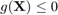
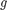
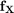
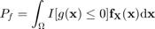
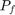

CODES / reliability / sorm
Second-order reliability method
Contents
Syntax
- res=CODES.reliability.sorm(g,dim) compute a SORM estimate of the probability that . The dim random variables are independent standard gaussian.
- res=CODES.reliability.sorm(...,param,value) uses a list of parameters param and values value (see, parameter table)
Approximations
For a given limit state function  and a joint PDF , the probability of failure is:

An approximation of  is given by the Second Order Reliability Method (SORM) which assumes that the limit state function is quadratic in the standard normal space.
The SORM approximations available in this toolbox are:
- 'Breitung', Wu (1984)
- 'Tvedt', Tvedt (1990)
- 'Koyluoglu', Köylüoǧlu & Nielsen (1994)
- 'Cai', Cai & Elishakoff (1994)
- 'Zhao', Zhao & Ono (1999)
- 'Subset', uses Subset Simulations Au & Beck (2001) on a second order Taylor expansion
Parameters
| param | value | Description |
|---|---|---|
| 'Tinv' | function_handle, { [ ] } | An inverse transformation function that transform realizations from a standard gaussian space into the desired space. For example, for an exponential space Tinv=@(u)expinv(normcdf(u),1). |
| 'approx' | {'Breitung'}, 'Tvedt', 'Koyluoglu', 'Cai', 'Zhao', 'Subset' | Defines which RIA solver to use, see Approximations. |
| 'rel_diff' | positive integer, {1e-5} | Perturbation used for finite difference. |
| 'res_form' | structure, { [ ] } | The result of a call to form. If empty, runs form with default. |
| 'H' | positive integer, { [ ] } | Hessian matrix in the U space. If not provided, uses finite differences. Usefull after a first run, for recall. |
| 'grad' | positive integer, { [ ] } | Gradient in the U space. If not provided, uses finite differences. Usefull after a first call run, for recall. |
Example
Compute and plot a generalized "max-min" sample
g=@CODES.test.lin; res=CODES.reliability.sorm(g,2); disp(res)
Pf: 0.0013
beta: 3.0000
LS_count: 15
MPP: [2.1213 2.1213]
H: [2x2 double]
G: [-0.7071 -0.7071]
Mini Tutorial
 |
A mini tutorial of the capabilities of the sorm function. |
References
- Breitung (1984): Breitung, K. (1984). Asymptotic approximations for multinormal integrals. Journal of Engineering Mechanics, 110(3), 357-366.
- Tvedt (1990): Tvedt, L. (1990). Distribution of Quadratic Forms in Normal Space - Application to Structural Reliability. Journal of Engineering Mechanics, 116(6), 1183-1197. DOI
- Köylüoǧlu & Nielsen (1994): Köylüoǧlu, H. U., & Nielsen, S. R. K. (1994). New approximations for SORM integrals. Structural Safety, 13(4), 235-246. DOI
- Cai & Elishakoff (1994): Cai, G. Q., & Elishakoff, I. (1994). Refined second-order reliability analysis. Structural Safety, 14(4), 267-276. DOI
- Zhao & Ono (1999): Zhao, Y.-G., & Ono, T. (1999). New Approximations for SORM: Part 1. Journal of Engineering Mechanics, 125(1), 79-85. DOI
- Au & Beck (2001): Au, S.-K., & Beck, J. L. (2001). Estimation of small failure probabilities in high dimensions by subset simulation. Probabilistic Engineering Mechanics, 16(4), 263-277. DOI
See also
Copyright © 2015 Computational Optimal Design of Engineering Systems (CODES) Laboratory. University of Arizona.
|
|
Computational Optimal Design of Engineering Systems |

|